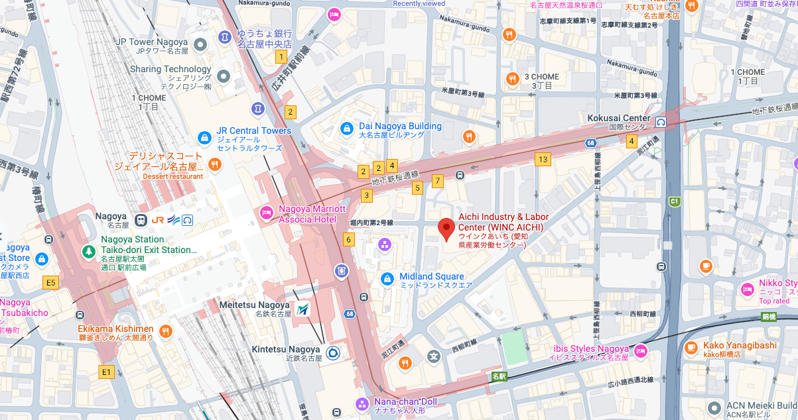

日時
2026年12月11日
金曜日 · 11:00 – 19:30
形式
ワークショップ＆ハッカソン
招待講演 + 2時間の実践セッション
会場
WINC Aichi
愛知県名古屋市中村区
参加
事前登録制
参加無料 · 定員54名
概要
本ワークショップ＆ハッカソンは、SIP3量子技術イノベーションプログラムで 開発されている国産超伝導量子コンピュータの運用に焦点を当てています。
ワークショップでは、国内外の第一人者による招待講演を通じて、我々の クラウドシステムの取り組みを紹介します。また、他の量子計算手法の 運用者とも知見を共有し、我々のシステムソフトウェアや運用技術を プラットフォーム横断で発展させることを目指します。
午後には、QCoderから利用できる量子回路シミュレータを用いたハッカソンを 実施します。量子プログラミングの実践的な体験を提供することで、量子 コンピューティングの普及と分野の発展に貢献します。
本イベントはQI2026のサテライトワークショップとして開催されます。
開催目的
本ワークショップ＆ハッカソンで目指すもの。
- 量子クラウドシステムの運用成果を、より幅広い研究・開発コミュニティに 普及させること。
- 他の量子計算手法の運用者と知見や運用ノウハウを共有すること。
- 量子回路シミュレータを用いたハッカソンにより、実践的な体験の機会を 提供すること。
- 国産量子コンピュータの普及を促進し、運用技術のプラットフォーム横断での 展開を進めること。
プログラム
2026年12月11日 · 時間はすべて日本標準時（JST）。
| 時間 | セッション |
|---|---|
| 11:00 – 12:30 | 招待講演 国内外の専門家による2〜3本の招待講演。 |
| 12:30 – 13:30 | 昼食 |
| 13:30 – 15:30 | ハッカソン 量子回路シミュレータを用いた2時間の実践的な量子プログラミング。 |
| 15:30 – 16:00 | 休憩 |
| 16:00 – 17:00 | ハッカソン結果発表 参加者がハッカソンの成果を発表します。 |
| 17:30 – 19:30 | ネットワーキング＆ディスカッション 参加者やスピーカーが交流するカジュアルなセッション。 |
ご留意ください：会場の都合などにより、スケジュールは 変更される可能性があります。変更があった場合は本ページでお知らせします。
スピーカー
招待講演には、海外から1〜2名、国内から1〜2名のスピーカーをお迎えします。
招待スピーカー — 海外
未定
海外の機関
講演タイトルは未定です
招待スピーカー — 国内
未定
国内の機関
講演タイトルは未定です
未定
国内の機関
講演タイトルは未定です
ハッカソン
量子回路シミュレータを用いた2時間の実践セッション。
ハッカソンでは、QCoderから利用できる量子回路シミュレータ上で、 量子プログラミングの実践的な体験をしていただきます。参加者は シミュレータ上で量子プログラムを作成・実行し、運用チームが セッション終了までサポートします。
ハッカソンは QCoder を用いて実施します。参加者はQiskitでプログラムを作成し、QCoder経由で 提出します。
成果は休憩直後のセッションで発表します。すべての参加者が、作り上げた ものを共有し、スピーカーや他の参加者とアプローチについて議論する 機会があります。
ハッカソンは個人競技です。参加者は1テーブル3〜6名で 着席し、各テーブルにファシリテーター1名が付き、グループをサポート します。互いに助け合いながら、競い合いながら、セッションを存分に 楽しんでください。
詳細は決定次第ここに公開します。下記のフォームから登録いただくと、 最新情報をお受け取りいただけます。
ハッカソン概要
- 時間 2時間（13:30 – 15:30）
- 対象 量子回路シミュレータ
- プラットフォーム QCoder
- プログラミング Qiskit
- テーマ 量子コンピューティング
- 形式 個人競技
- 着席 1テーブル3〜6名、ファシリテーター1名
- 前提条件 QCoderアカウント（事前登録）
- 持参物 ノートPC（持参）
事前の準備
-
QCoderアカウントを事前に作成してください。
ハッカソンは QCoder を用いて実施します。セッション開始直後からプログラミングを始められる よう、イベント前にサインアップしておいてください。
-
ノートPCをご持参ください。
セッション中にプログラムの作成と提出を行うために必要です。
-
Qiskit環境を準備しておいてください。
お使いのマシンにQiskitがインストールされ、動作するようになって いれば、2時間のセッションがスムーズに進みます。
会場
愛知県名古屋市中村区名駅4-4-38
WINC Aichiは名古屋駅すぐそばのコンベンション・展示施設で、中部国際 空港（セントレア）や新幹線ネットワークへのアクセスも良好です。
詳細なアクセス情報と部屋割りについては、イベント日が近づきましたら ここに掲載します。

参加登録
参加は無料ですが、ハッカソンやケータリングの準備のため事前登録が 必要です。定員は54名のため、下記の登録フォームで枠を確保して ください。詳細は登録された方にお送りします。
ハッカソンにご参加予定の方は、イベント前に QCoderアカウントの作成 と、Qiskit環境を準備したノートPCのご持参もお願いします。
主催
主催機関
- 理化学研究所（国立研究開発法人）
- 大阪大学
プログラム
- SIP3量子技術イノベーション
- 国産超伝導量子コンピュータの運用
併催
- QI2026 — サテライトワークショップ